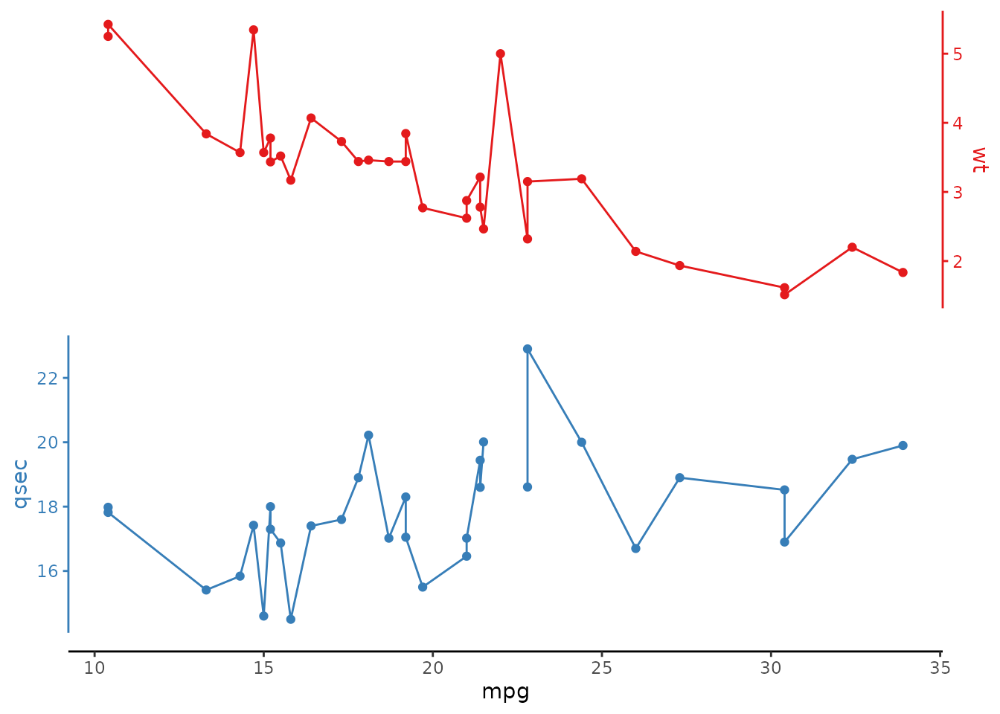
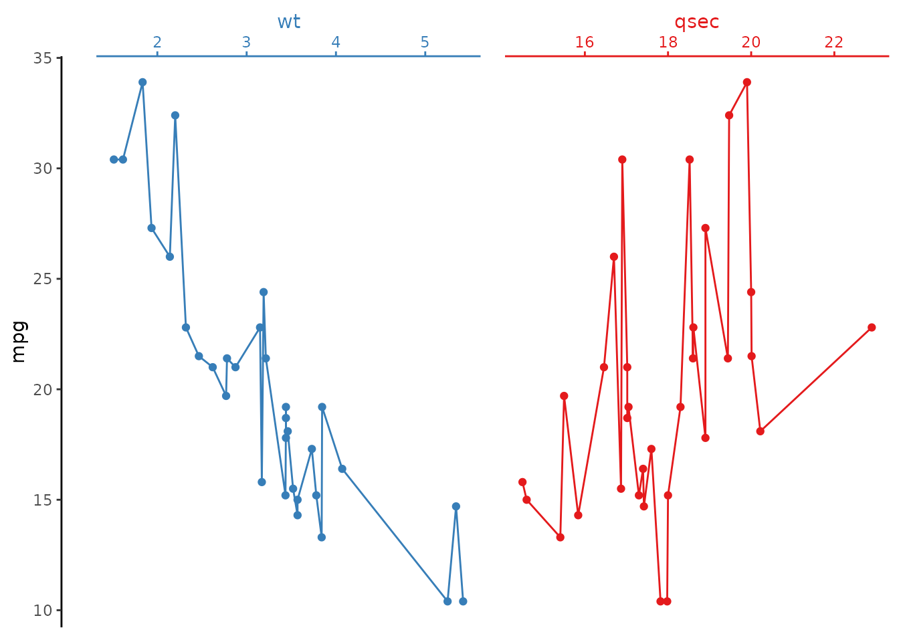
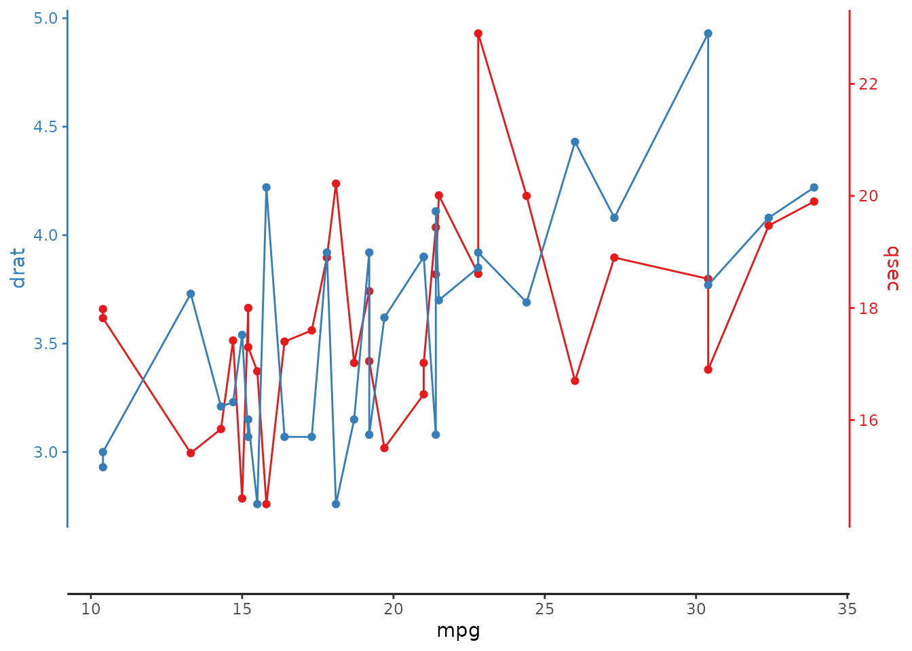
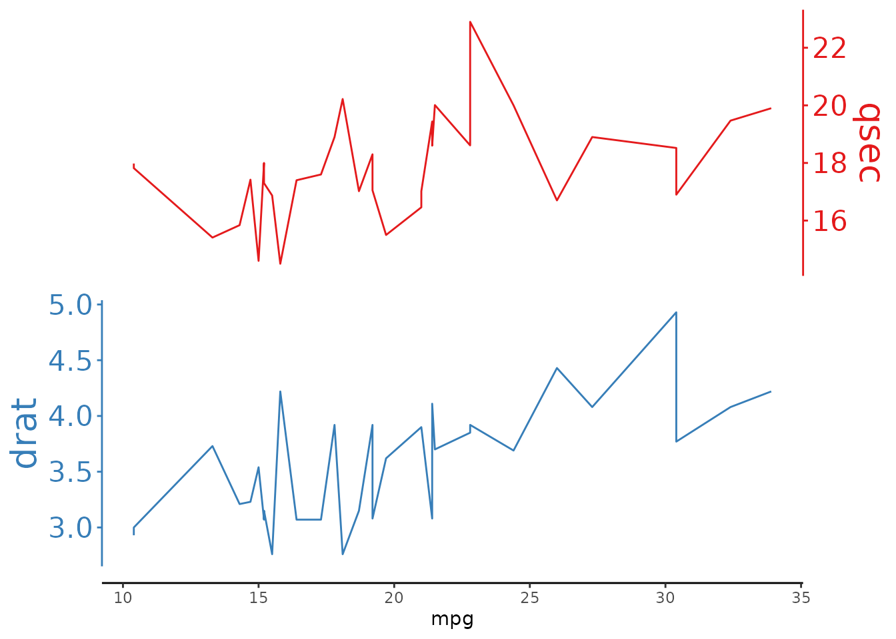
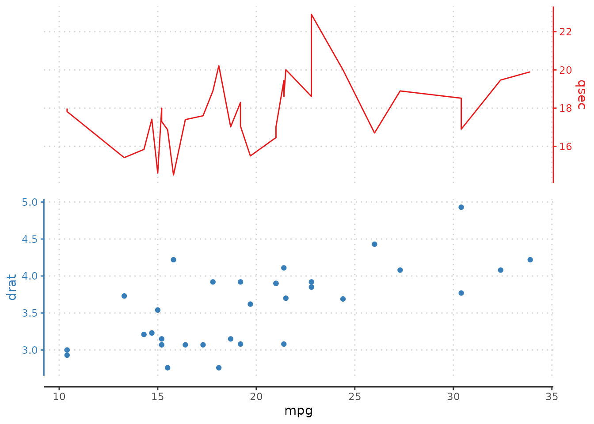
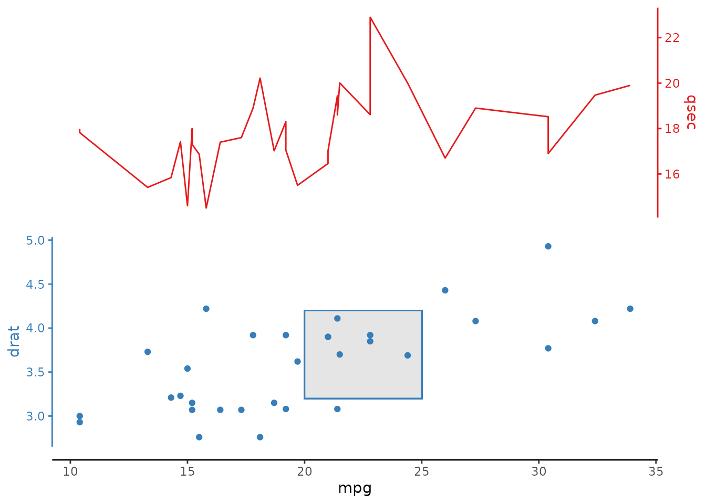
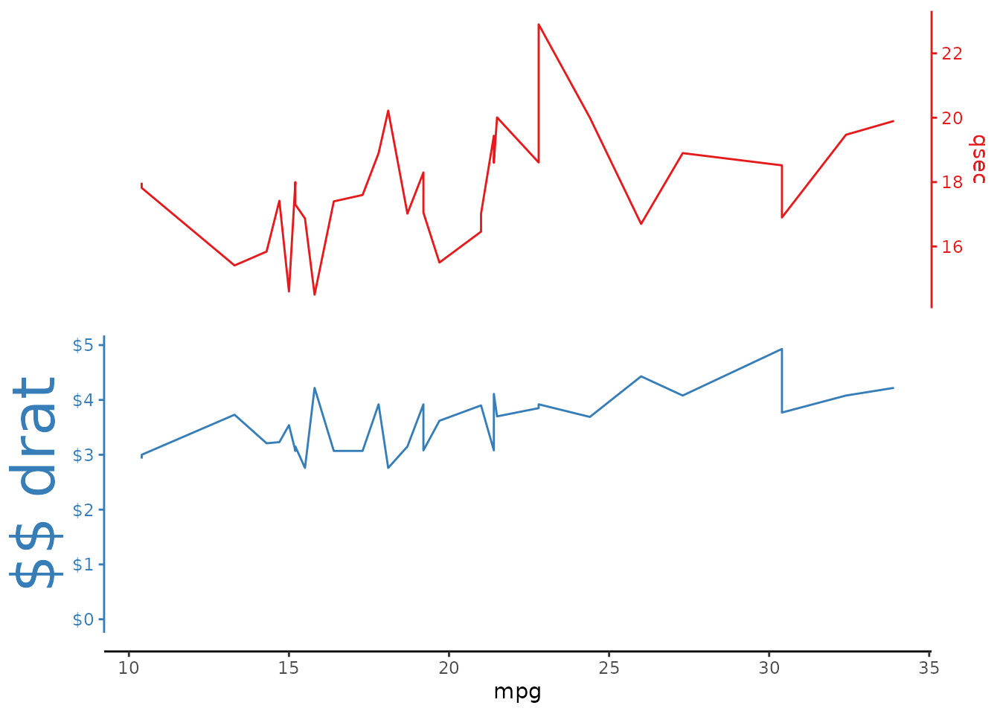

ggstackplot features
features.Rmd
library(ggstackplot)Main Arguments
x and y arguments
Vertical stack
Select variables to make a stack. The selection order translates to the order with which the plots are stacked. Any valid tidyselect selection and/or renaming are supported.
# select any number of variables to make the stack
mtcars |>
ggstackplot(
x = mpg, y = c(wt, qsec, drat)
)
# the selection order translates into stack order
mtcars |>
ggstackplot(
x = mpg, y = c(drat, wt, qsec)
)
# use any valid tidyselect selection syntax
mtcars |>
ggstackplot(
x = mpg, y = c(4, "carb", starts_with("d"))
)
# use any valid tidyselect renaming syntax to rename stack panels
mtcars |>
ggstackplot(
x = c(`mpg [units]` = mpg),
y = c(`weight [tons]` = wt, `speed` = qsec, drat)
)
Horizontal stack
Select multiple x variables to stack:
# all examples shown in this document work the same way for a horizontal
# stack, simply switch out the x and y assignments
mtcars |>
ggstackplot(
y = mpg, x = c(wt, qsec, drat)
)
palette argument
Set individual plot colors by providing an RColorBrewer palette. Color definition applies to the color and fill aesthetics as well as the actual axis colors.
# use the Set1 RColorBrewer palette
mtcars |>
ggstackplot(
x = mpg, y = c(wt, qsec),
palette = "Set1"
)
# likewise for the horizontal stack version
mtcars |>
ggstackplot(
y = mpg, x = c(wt, qsec),
palette = "Set1"
)
color argument
Alternatively, set colors manually by supplying a character vector of colors:
# select any specific colors for each plot
mtcars |>
ggstackplot(
x = mpg, y = c(wt, qsec),
color = c("#E41A1C", "#377EB8")
)
remove_na argument
This removes NA values so that lines are not interrupted. When
remove_na is set to FALSE, breaks in lines may
appear due to NA values.
library(dplyr)
# default (NAs are removed so lines are not interrupted)
mtcars |>
add_row(mpg = 22, wt = 5, qsec = NA) |>
ggstackplot(
x = mpg, y = c(wt, qsec),
color = c("#E41A1C", "#377EB8")
)
# explicit `remove_na` = FALSE
mtcars |>
add_row(mpg = 22, wt = 5, qsec = NA) |>
ggstackplot(
x = mpg, y = c(wt, qsec),
color = c("#E41A1C", "#377EB8"),
remove_na = FALSE
)
both_axes argument
When both_axes = TRUE , the stacked variable axes are
duplicated on both sides of each stacked plot.
# Vertical stackplot
mtcars |>
ggstackplot(
x = mpg, y = c(wt, qsec),
color = c("#E41A1C", "#377EB8"),
both_axes = TRUE
)
# Horizontal stackplot
mtcars |>
ggstackplot(
y = mpg, x = c(wt, qsec),
color = c("#E41A1C", "#377EB8"),
both_axes = TRUE
)
alternate_axes argument
When alternate_axes = FALSE , the axes for the multiple
variables are kept on the same side of the facets. The default behavior
alternates these axes left/right or top/bottom.
# axes do not alternate:
mtcars |>
ggstackplot(
x = mpg, y = c(wt, qsec),
color = c("#E41A1C", "#377EB8"),
alternate_axes = FALSE
)
# Horizontal version
mtcars |>
ggstackplot(
y = mpg, x = c(wt, qsec),
color = c("#E41A1C", "#377EB8"),
alternate_axes = FALSE
)
switch_axes argument
Determines whether to switch the stacked axes. Not switching means
the first plot in the lower left corner is always arranged like a
regular ggplot with the y axis on the left and the x axis on the bottom
(even if alternate_axes = TRUE). Setting
switch_axes = TRUE}, leads to the opposite, i.e. the first
plot in the lower corner has the variable axis on the other side
(secondary in ggplot terms). If alternate_axes = TRUE this
essentially switches the order with which the axes alternate (e.g.,
right/left/right vs. left/right/left).
# stacked axis starts on the right
mtcars |>
ggstackplot(
x = mpg, y = c(wt, qsec),
color = c("#E41A1C", "#377EB8"),
switch_axes = TRUE
)
# or for the horizontal version, stacked axis
# starts on the top
mtcars |>
ggstackplot(
y = mpg, x = c(wt, qsec),
color = c("#E41A1C", "#377EB8"),
switch_axes = TRUE
)
# and in combination with alternate_axes = FALSE
# all axes on the right
mtcars |>
ggstackplot(
x = mpg, y = c(wt, qsec),
color = c("#E41A1C", "#377EB8"),
alternate_axes = FALSE,
switch_axes = TRUE
)
# or all axes on the top
mtcars |>
ggstackplot(
y = mpg, x = c(wt, qsec),
color = c("#E41A1C", "#377EB8"),
alternate_axes = FALSE,
switch_axes = TRUE
)
overlap argument
Overlap determines the grid overlap between the multiple stacked
plots. 1 corresponds to fully overlapping (similar to
having a ggplot sec_axis enabled) while 0 does
not overlap at all.
# define any overlap between 0 and 1
mtcars |>
ggstackplot(
x = mpg, y = c(qsec, drat),
color = c("#E41A1C", "#377EB8"),
overlap = 0.3
)
# full overlap
mtcars |>
ggstackplot(
x = mpg, y = c(qsec, drat),
color = c("#E41A1C", "#377EB8"),
overlap = 1
)
Different overlaps
Multiple overlap arguments can be supplied with a numeric vector of
numbers between 0 and 1, where each element in the vector corresponds to
the overlap between the n and n+1th overlap value. For
example, for a plot with four stacked panels: qsec,
drat, wt, hp, a vector of
overlap = c(1, 0, 1) indicates that between the first 2
elements (qsec and drat) there is full
overlap. Between drat and wt there is no
overlap (0). Between wt and hp
there is full overlap.
# different overlap between stack panels
mtcars |>
ggstackplot(
x = mpg,
y = c(qsec, drat, wt, hp),
color = c("#E41A1C", "#377EB8", "#4DAF4A", "#984EA3"),
overlap = c(1, 0, 1)
)
# and the horizontal version
mtcars |>
ggstackplot(
y = mpg,
x = c(qsec, drat, wt, hp),
color = c("#E41A1C", "#377EB8", "#4DAF4A", "#984EA3"),
overlap = c(1, 0, 1)
)
shared_axis_size argument
The size of the shared axis determines the size of any shared axes relative to the grid size of the original ggplot. The size of the shared axis often needs to be adjusted depending on which aspect ratio is intended. It is defined as fraction of a full panel, between 0 and 1.
mtcars |>
ggstackplot(
x = mpg, y = c(qsec, drat),
color = c("#E41A1C", "#377EB8"),
overlap = 1,
# can be only 10% of a plot size as we're overlapping plots
shared_axis_size = 1
)
simplify_shared_axis argument
Sometimes it’s better just to keep the shared axis on each panel.
This produces something akin to a facet_wrap() or
cowplot::plot_grid().
mtcars |>
ggstackplot(
x = mpg, y = c(qsec, drat),
color = c("#E41A1C", "#377EB8"),
simplify_shared_axis = FALSE
)
# also goes well with changing `both_axes`, `switch_axes` and/or `alternate_axes`
mtcars |>
ggstackplot(
x = mpg, y = c(qsec, drat),
color = c("#E41A1C", "#377EB8"),
simplify_shared_axis = FALSE,
alternate_axes = FALSE
)
The template argument
This is the most important argument. It defines which ggplot to use
as the template for all plots in the stack. This can be an actual plot
(just the data will be replaced) or a ggplot that doesn’t have data
associated yet. The possibilities are pretty much endless. Just make
sure to always add the theme_stacked_plot() base theme (you
can modify it more from there on). A few examples below:
Theme modifications
Add any modification to the overlying theme as you see fit.
Here, template allows the user to define that a
ggplot() will serve as the base, with
geom_line as the primary geom. Then,
theme_stackplot() is applied and custom
theme() options are set.
library(ggplot2)
# increase y axis text size
mtcars |>
ggstackplot(
x = mpg, y = c(qsec, drat),
color = c("#E41A1C", "#377EB8"),
template =
ggplot() +
geom_line() +
theme_stackplot() +
theme(
axis.title.y = element_text(size = 20),
axis.text.y = element_text(size = 16)
)
)
# increase the panel margins
mtcars |>
ggstackplot(
x = mpg, y = c(qsec, drat),
color = c("#E41A1C", "#377EB8"),
template =
ggplot() +
geom_line() +
theme_stackplot() +
theme(
# increase left margin to 20% and top/bottom margins to 10%
plot.margin = margin(l = 0.2, t = 0.1, b = 0.1, unit = "npc")
)
)
Grid modifications
Modifying the panel.grid argument can create gridlines
for both the stacked variable axes and the shared axis. This can get a
bit cluttered in a plot where overlap = 1.
mtcars |>
ggstackplot(
x = mpg, y = c(qsec, drat),
color = c("#E41A1C", "#377EB8"),
overlap = 1,
template = ggplot() +
geom_line(data = function(df) filter(df, .yvar == "qsec")) +
geom_point(data = function(df) filter(df, .yvar == "drat")) +
theme_stackplot() +
theme(
panel.grid.major = element_line(
color = "lightgray",
linewidth = 0.8)
)
)
But, this can look reasonable if there is no overlap of the stacked plats, and/or if the lines are made inconspicuous:
mtcars |>
ggstackplot(
x = mpg, y = c(qsec, drat),
color = c("#E41A1C", "#377EB8"),
overlap = 0,
template = ggplot() +
geom_line(data = function(df) filter(df, .yvar == "qsec")) +
geom_point(data = function(df) filter(df, .yvar == "drat")) +
theme_stackplot() +
theme(
panel.grid.major = element_line(
color = "lightgray",
linetype = "dotted",
linewidth = 0.5)
)
)
Other themes
You aren’t bound to our theme’s aesthetic choices :), you can always
add another theme or theme modifications on top of
theme_stackplot()! Here we add the classic
theme_bw() to get those nice clean gridlines back, as well
as a panel border.
mtcars |>
ggstackplot(
x = mpg, y = c(qsec, drat),
color = c("#E41A1C", "#377EB8"),
overlap = 0,
template = ggplot() +
geom_line(data = function(df) filter(df, .yvar == "qsec")) +
geom_point(data = function(df) filter(df, .yvar == "drat")) +
theme_stackplot() +
theme_bw() # give us that good theme!
)
Custom geom data
It is possible to use different geoms for different stacked panels.
Here, we use both lines and points. These geoms are defined in the
template argument.
# use different geoms for different panels
# you can refer to y-stack panel variables with `.yvar` and x-stack panel variables with `.xvar`
mtcars |>
ggstackplot(
x = mpg, y = c(qsec, drat),
color = c("#E41A1C", "#377EB8"),
overlap = 1,
template = ggplot() +
geom_line(data = function(df) filter(df, .yvar == "qsec")) +
geom_point(data = function(df) filter(df, .yvar == "drat")) +
theme_stackplot()
)Different plot elements
One can also change the geoms in the default theme. Here we use
geom_path() instead of geom_line() in a
horizontal stack. This is a very common use case because
geom_line() connects the data points by increasing x-axis
which is not always what we want (for example in oceanographic depth
plots where we want to connect the data points by increasing y-axis
value).
# horizontal stack with default (geom_line())
mtcars |>
ggstackplot(
y = mpg, x = c(qsec, drat),
color = c("#E41A1C", "#377EB8"),
template =
ggplot() +
geom_point() +
geom_line() + # default in template
theme_stackplot()
)
# the following is the exact same data but using a
# horizontal stack with "depth-profile" like geom_path()
mtcars |>
# arrange data by the y-axis
arrange(mpg) |>
ggstackplot(
y = mpg, x = c(qsec, drat),
color = c("#E41A1C", "#377EB8"),
template =
ggplot() +
geom_point() +
geom_path() + # plots data in order
theme_stackplot()
)Additional plot elements
One can also add additional plot elements just as with a normal ggplot. Here we add a vertical line that is shared across all stacked plots:
mtcars |>
ggstackplot(
x = mpg, y = c(qsec, drat),
color = c("#E41A1C", "#377EB8"),
overlap = 0.2,
template =
ggplot() +
geom_vline(xintercept = 20, linewidth = 4, color = "gray80") +
geom_line() +
theme_stackplot()
)
Axis modifications
Sometimes secondary axes will still be desired, especially if that
axis is a transformation of an existing one. For example, here, we
create a square root mpg axis that is plotted against the mpg axis.
Again, all of this is defined in the template argument by
adding a scale_x_continuous argument, just as you would in
a normal ggplot.
# add a secondary x axis
mtcars |>
ggstackplot(
x = mpg, y = c(qsec, drat),
color = c("#E41A1C", "#377EB8"),
both_axes = TRUE,
overlap = 0.1,
template =
ggplot() +
geom_line() +
scale_x_continuous(
# change axis name
name = "this is my mpg axis",
# this can be the same with dup_axis() or as here have a transformed axis
sec.axis = sec_axis(
transform = sqrt,
name = expression(sqrt(mpg)),
breaks = scales::pretty_breaks(5)
)
) +
theme_stackplot()
)
Additional aesthetics
Aesthetics are also defined in the template argument.
Remember, the only parameters that are defined in the stackplot are (i)
the shared axis (in this case, mpg ), (ii) the axes to be
stacked, in this case y = c(wt, qsec, drat), (iii) any
ggstackplot-specific arguments. All ggplot arguments and aesthetics are
assigned in the template argument.
# add aesthetics to the plot
mtcars |>
ggstackplot(
x = mpg, y = c(wt, qsec, drat),
alternate_axes = FALSE,
template =
ggplot() +
aes(color = factor(cyl), linetype = factor(cyl), shape = factor(cyl)) +
geom_line() +
geom_point(size = 3) +
theme_stackplot()
)
The add argument
For even more specific plot refinements, the add
argument provides an easy way to add ggplot components to
specific panels in the stack plot. A few examples
below:
Custom geoms
Similar to the example custom geom data the
add argument can also be used to add specific geoms
only to specific panels.
This takes the form of a list() where each item in the
list is of the form: panel_name = panel_addition where
panel_name is the panel-specific variable and
panel_addition is the item to add
(+) to that panel. add also allows the user to
make additions by index (e.g., first panel, second panel, third panel,
etc.).
Here, we add a geom_line to the qsec panel
and a geom_rect rectangle to the drat panel by
defining these panels in the list().
mtcars |>
ggstackplot(
x = mpg, y = c(qsec, drat),
color = c("#E41A1C", "#377EB8"),
template = ggplot() + theme_stackplot(),
# add:
add = list(
# panel by name
qsec = geom_line(),
drat = geom_rect(
xmin = 20, xmax = 25, ymin = 3.2, ymax = 4.2, fill = "gray90") +
geom_point()
)
)
Custom themes
Similarly, custom theme options can be added to specific panels.
Here, we add by panel index:
mtcars |>
ggstackplot(
x = mpg, y = c(qsec, drat),
color = c("#E41A1C", "#377EB8"),
# define ggplot template options
template =
ggplot() +
geom_line() +
theme_stackplot(),
# define panel-specific additions
add = list(
# panel by index
# first panel:
geom_point() + theme(
axis.title.y = element_text(size = 30)),
# second panel:
theme(
panel.grid.major.y = element_line(
color = "lightgray",
size = 0.2))
)
)Custom axes
The add argument also allows the definition of custom
axes. This is particularly useful if applying functions from the
scales package.
# particularly useful is also the possibility to modify individual scales
mtcars |>
ggstackplot(
x = mpg, y = c(qsec, drat),
color = c("#E41A1C", "#377EB8"),
template = ggplot() + geom_line() + theme_stackplot(),
add = list(
# modify the axis for the second plot
drat =
scale_y_continuous("$$ drat", labels = scales::label_dollar()) +
expand_limits(y = 0) +
theme(axis.title.y = element_text(size = 30))
)
)
Legend positioning
Another example of theme modification is the use of the `add` argument to specify legend positioning.
mtcars |>
ggstackplot(
x = mpg, y = c(wt, qsec, drat),
color = c("#E41A1C", "#377EB8", "#4DAF4A"),
template =
ggplot() + aes(linetype = factor(vs)) +
geom_line() + theme_stackplot(),
# switch legend position for middle plot
add = list(qsec = theme(legend.position = "left"))
)
mtcars |>
ggstackplot(
x = mpg, y = c(wt, qsec, drat),
color = c("#E41A1C", "#377EB8", "#4DAF4A"),
template =
ggplot() +
aes(linetype = factor(vs)) +
geom_line() +
theme_stackplot() +
# remove the legends, then...
theme(legend.position = "none"),
# ... re-include the middle panel legend on the plot
# with some additional styling
add = list(
qsec =
theme(
# define legend relative position in x,y:
legend.position = c(0.2, 0.9),
# other legend stylistic changes:
legend.title = element_text(size = 20),
legend.text = element_text(size = 16),
legend.background = element_rect(
color = "black", fill = "gray90", linewidth = 0.5),
legend.key = element_blank(),
legend.direction = "horizontal"
) +
labs(linetype = "VS")
)
)Putting it all together
# example from the README with economics data bundled with ggplot2
ggplot2::economics |>
ggstackplot(
# define shared x axis
x = date,
# define the stacked y axes
y = c(pce, pop, psavert, unemploy),
# pick the RColorBrewer Dark2 palette (good color contrast)
palette = "Dark2",
# overlay the pce & pop plots (1), then make a full break (0) to the once
# again overlaye psavert & unemploy plots (1)
overlap = c(1, 0, 1),
# switch axes so unemploy and psavert are on the side where they are
# highest, respectively - not doing this here by changing the order of y
# because we want pop and unemploy on the same side
switch_axes = TRUE,
# make shared axis space a bit smaller
shared_axis_size = 0.15,
# provide a base plot with shared graphics eelements among all plots
template =
# it's a ggplot
ggplot() +
# use a line plot for all
geom_line() +
# we want the default stackplot theme
theme_stackplot() +
# add custom theme modifications, such as text size
theme(text = element_text(size = 14)) +
# make the shared axis a date axis
scale_x_date("year") +
# include y=0 for all plots to contextualize data better
expand_limits(y = 0),
# add plot specific elements
add =
list(
pce =
# show pce in trillions of dollars
scale_y_continuous(
"personal consumption expenditures",
# always keep the secondary axis duplicated so ggstackplot can
# manage axis placement for you
sec.axis = dup_axis(),
# labeling function for the dollar units
labels = function(x) sprintf("$%.1f T", x/1000),
),
pop =
# show population in millions
scale_y_continuous(
"population", sec.axis = dup_axis(),
labels = function(x) sprintf("%.0f M", x/1000)
),
psavert =
# savings is in %
scale_y_continuous(
"personal savings rate", sec.axis = dup_axis(),
labels = function(x) paste0(x, "%"),
) +
# show data points in addition to line
geom_point(),
unemploy =
# unemploy in millions
scale_y_continuous(
"unemployed persons", sec.axis = dup_axis(),
labels = function(x) sprintf("%.0f M", x/1000)
) +
# show data points in addition to line
geom_point()
)
)Advanced
Instead of calling ggstackplot() to make a plot, you can
also use prepare_stackplot() and
assemble_stackplot() to separate the two main steps of
making a ggstackplot. prepare_stackplot() provides a tibble
with all the plot components that can be modified directly in the tibble
if so desired before assembling the plot with
assemble_stackplot(). Usuallyt this is not necessary
because the combination of the template and
add parameters in ggstackplot() provides the
same kind of flexibility as modifying plot elements in the plot
tibble.
# prep plot
plot_prep <-
mtcars |>
prepare_stackplot(
x = mpg, y = c(wt, qsec),
palette = "Set1"
)
# show plot tibble
plot_prep
#> # A tibble: 2 × 6
#> .var config data plot theme add
#> <chr> <list> <list> <list> <list> <list>
#> 1 wt <tibble [1 × 9]> <tibble [32 × 11]> <gg> <theme> <NULL>
#> 2 qsec <tibble [1 × 9]> <tibble [32 × 11]> <gg> <theme> <NULL>
# modify plot tibble
plot_prep$plot[[2]] <- ggplot(mtcars) + aes(mpg, drat) + geom_point()
plot_prep$theme[[2]] <- theme_bw()
# assemble stackplot
plot_prep |> assemble_stackplot()